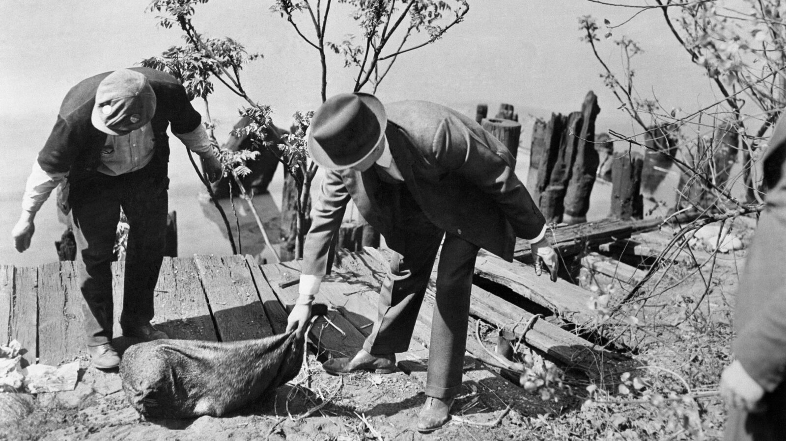

Dead Body
Law enforcement finding a victim
Map
Bodies' locations map
Museum
Visit the museum for more
The Dark Truth
By: Jayden Yau & Ethan Cash
Studying serial killers is essential for understanding human psychology and the factors that lead individuals to commit heinous crimes. By diving into the backgrounds, motivations, and psychological states of serial killers, we gain insight into the complexities of human behavior and the societal factors that may contribute.
The Cleveland Torso Murderer, also known as the Mad Butcher of Kingsbury Run, was an unidentified serial killer active in Cleveland, Ohio, during the 1930s. The killer's activites involved decapitating and dismembering victims, leaving their bodies in various locations. Most of the victims were people struggling in socety, meking them hard to identify. Many of these murders remain unsolved, and the true identity of the Cleveland Torso Murderer has never been determined.
Law enforcement finding a victim
Bodies' locations map
Visit the museum for more
The Clevaland torso murderer was very precise and strategic with the crimes he had commited:
The Cleveland Torso Murderer is believed to have killed and dismembered at least 12 victims between 1935 and 1938. The victims, mostly drifters and individuals from marginalized communities.
The killer's modus operandi included decapitation and dismemberment, with a high level of precision suggesting a knowledge of human anatomy. Some victims showed signs of sexual mutilation, indicating possible sadistic tendencies .
The killer's method of disposal. Victims' torsos were often found washed up along the banks of the Cuyahoga River, making identification difficult and allowing the killer to remain anonymous.
The Cleveland Torso Murderer likely found joy in killing and dismembering victims, possibly due to psychopathic or sadistic tendencies. Their intelligence and evasiveness suggest cunning. They may have suffered from:
Antisocial Personality Disorder (ASPD) is a mental health condition where a person consistently ignores others' rights and breaks social rules. They may lie, act impulsively, and have no guilt about their behavior. People with ASPD often struggle to keep relationships and jobs and might have problems with drugs or the law.
Lack of empathy means not being able to understand or share the feelings of others. It involves having difficulty recognizing and understanding other people's emotions and needs.
Disregard for life refers to a lack of value or respect for human life, often resulting in actions that endanger or harm others without concern for their well-being or safety.